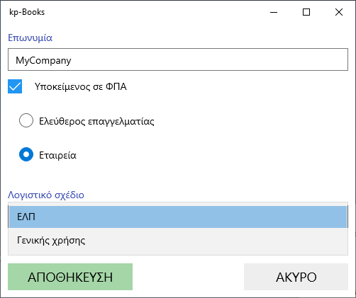

Πρώτα απ'όλα η εφαρμογή ζητάει να επιλέξουμε ανάμεσα σε Ελληνικά η Αγγλικά. Η επιλογή μπορεί να αλλάξει και αργότερα από το μενού "Ρυθμίσεις"-"αλλαγή γλώσσας".
Κατόπιν ζητά ένα λογαριασμό email στον οποίο θα δοθεί η άδεια χρήσης. Στα windows πρέπει να τον πληκτρολογήσουμε, ενώ στο android τον διαλέγουμε από τους λογαριασμούς που έχουμε ορίσει στο κινητό μας. Ο λογαριασμός email πρέπει να είναι αυτός που δηλώσαμε την στιγμή της αγοράς της εφαρμογής.
Εφόσον ενεργοποιηθεί η άδεια χρήσης, θα εμφανισθεί η παρακάτω εικόνα:

Αν πρόκειται να τρέχουμε την εφαρμογή σε πολλές συσκευές και θέλουμε να γίνεται συγχρονισμός των δεδομένων, τότε κάθε συσκευή πρέπει να προσδιορίζεται μοναδικά από ένα γράμμα. Θα μπορούσε πχ το κινητό να έχει το γράμμα 'Α' και ο επιτραπέζιος υπολογίστής το γράμμα 'Β'. Το αναγνωριστικό της συσκευής μπορεί να αλλάξει απο το μενού "Ρυθμίσεις" - "Συγχρονισμός δεδομένων" - "Αυτή η συσκευή" (δες Συγχρονισμός συσκευών)
Η εφαρμογή θα δημιουργήσει τώρα την επιχείρησή σας και θα εμφανίσει την παρακάτω οθόνη για να συμπληρώσετε την επωνυμία της, αν υπόκειται σε ΦΠΑ και αν είναι ατομική η εταιρική.
Απο το μενού "Ρυθμίσεις" -"Στοιχεία Εταιρείας" μπορείτε να αλλάξετε τα παραπάνω στοιχεία και να συμπληρώσετε και επι πλέον στοιχεία. Αν έχετε ήδη πελάτες, προμηθευτές και είδη αποθήκης, μπορείτε να κάνετε μαζική εισαγωγή με την λειτουργία Εισαγωγή δεδομένων από Excel